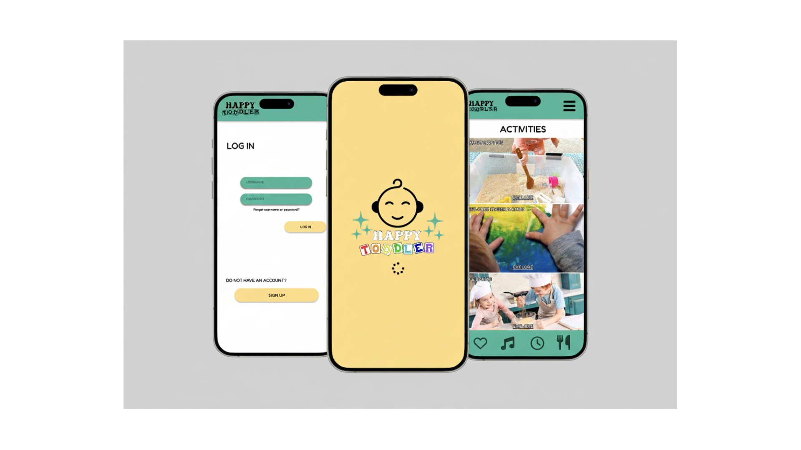
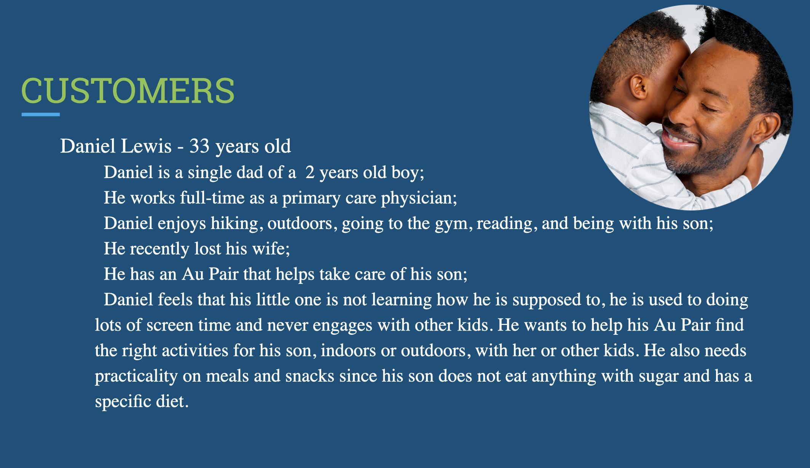
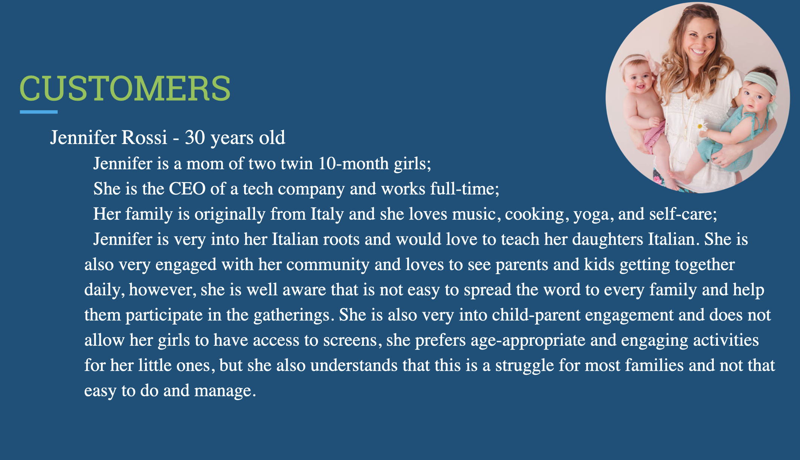
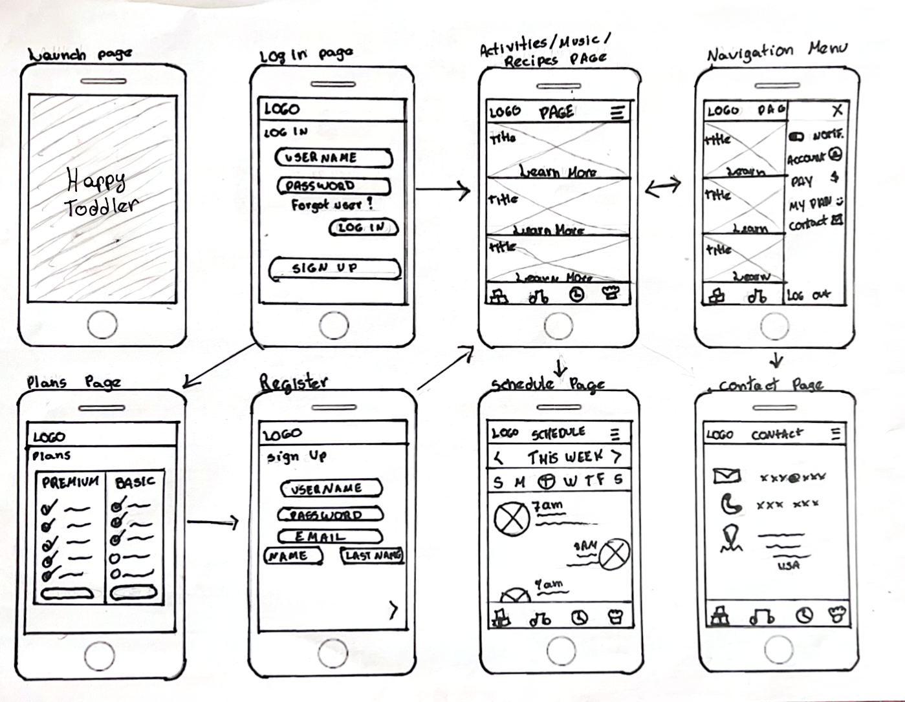
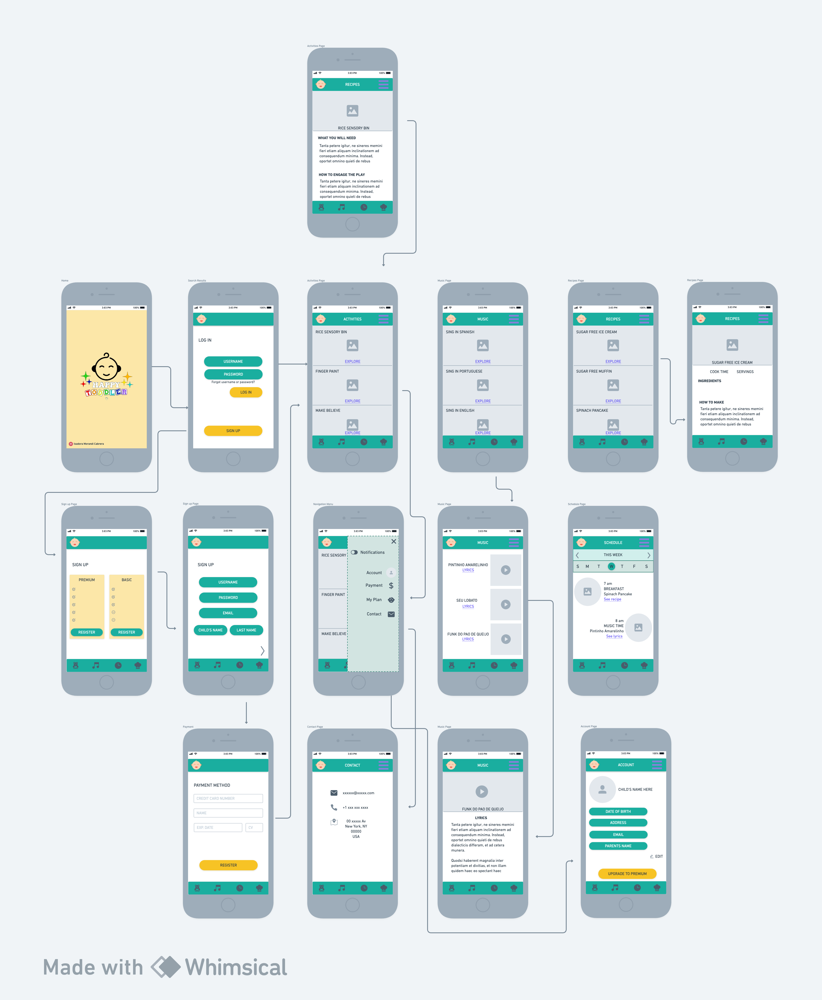
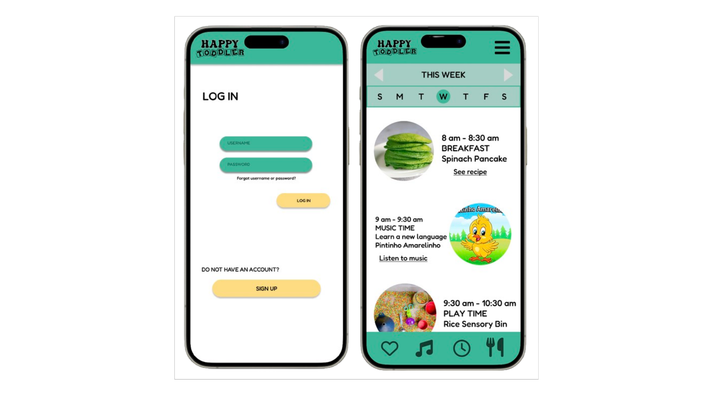

UX Design | UX Research | UI Design | Usability Test
Access the Prototype

This project is a prototype created using Figma and Adobe Creative Suite. It is a mobile application called Happy, which was designed to help parents create an established routine for their little ones. It will work like the friend or family member who is also a parent and seems to have everything figured out: you will have access to several tips with age-appropriate activities and quick, healthy meals that will help your child to grow healthy, develop, and burn the energy they need, avoiding those stressed and overstimulated toddler days.
The main focus of the prototype is to create a functional, intuitive and appealing tool to assist parents all over the world, with free download available for iOS and Android and Premium packages available for a more personalized and targeted experience.
The key features include sign up, age filter, sensory activity database, several sugar-free and healthy recipes that are toddler-friendly, musical games, and even tools and assistance to learn and teach a new language.
Raising a toddler often feels like a lost cause. Parents are constantly making decisions that impact their child’s development, however reliable and actionable guidance is not always easy to access.
Many parents find themselves asking:
These questions highlight that parents need timely, personalized, and practical support to confidently engage with their child’s development throughout the day, without falling into the desperation of using screens all the time.
Without a centralized, easy-to-use solution, parents often rely on advice that could often lead to uncertainty, inconsistency, and cognitive load during an already demanding stage of life.
We live in a society where we hope to find all the solutions for our problems at the tip of our fingers, by using our mobile devices. This is where Happy Toddler enters as an All-in-one app, without forcing parents to download 5 different apps for 5 different things related to childcare. It works as an assistant for the caregiver, not for the kids, since it is not an app with games for the child, but with tips for the parents to engage in screen-free activities. With contents that are developed by specialists: psychologists, occupational therapists, dietitians, speech therapists, and early educators, the app aims to assist with DIY activities for sensory play, pretend play, to encourage boredom, creativity, independent play, and others.
This app also has the goal to help with meal prepping, with ideas of recipes that are toddler-friendly, encouraging families to bring their kids to the kitchen to explore food. It will also contain a large library with kids’ songs with lyrics, dances, and tips on how to teach a new language to your child.
However, we know every child is different, so to avoid redundancy, the app allows the creation of a targeted and personalized schedule to be accessed by all child-care providers, with activities that follow the child’s routine for an even smoother experience.
Happy Toddler is designed by parents, for parents. By consolidating activities, nutrition guidance, and routine-building tools into one intuitive platform, the app reduces the need for parents to juggle multiple sources of information. This directly addresses the cognitive overload, enabling caregivers to make quicker, more confident decisions throughout the day.
A series of personas was created to impersonate parents facing several issues and struggles related to childcare and maintaining a household screen-free. By creating the personas, we were able to understand different aspects of family dynamics, routines, and needs.
Rather than focusing on a single user type, the research intentionally explored multiple family structures to identify overlapping pain points and shared behavioral patterns. This approach helped uncover common struggles across different contexts, including time constraints, lack of accessible guidance, and difficulty maintaining consistent routines.
By grounding the design process in these personas, I was able to better empathize with users and ensure that the proposed solution addresses real-world challenges faced by a broad spectrum of caregivers.
Parents frequently feel overwhelmed by the number of choices they must make regarding activities, meals, and routines.
Information is often scattered across blogs, social media, and advice from peers, making it difficult to know what to trust or follow consistently.
Many parents aim to limit screen exposure but struggle to find engaging, easy-to-implement alternatives
Parents prefer quick, practical ideas that fit into their existing routines rather than complex or time-consuming activities.
Different caregivers (partners, grandparents, babysitters) often follow different approaches, leading to fragmented routines.





The research validated that parents are not lacking motivation, but rather accessible, structured support that fits into their daily lives.
These insights directly informed the design of Happy Toddler as an all-in-one, user-friendly platform that simplifies decision-making and promotes consistency. By combining expert-backed guidance with personalization features, the app aims to reduce stress while empowering parents to confidently support their child’s development.
This project highlights an opportunity to reposition mobile technology, not as a replacement for interaction, but as a tool that enables more meaningful, screen-free engagement between parents and their children.